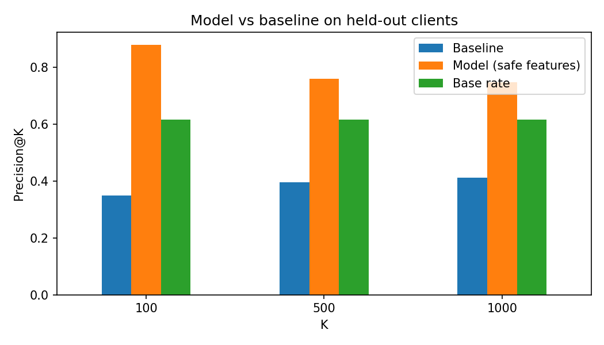

Karthick · FlyRank AI Internship, Machine Learning track
Which pages should a content team review for a refresh first? I labeled pages whose impressions fell more than 20% over 30 days and trained a gradient boosting model on page properties, using held-out clients for testing. A transparent "stale but visible" rule was the baseline. On 7 held-out clients, the model's top 100 pages were correct 88% of the time, against a 61.7% base rate, while the baseline ranked below chance. Overall ranking quality is modest (ROC-AUC 0.597), so the results are directional decision-support, not proof that a refresh helps.
Content teams have limited editing time. The decision this work supports is which pages to review for a refresh now and which can wait. A wrong call has a cost in both directions: refreshing the wrong pages wastes effort, and missing an important page may mean traffic keeps declining.
The data is the FlyRank ML Internship starter dataset: one row per pseudonymized content item, 30,000 rows and 44 columns from 32 clients, with trailing-90-day metrics. Pages with no earlier-window baseline (marked new or flat) were excluded, leaving 26,612 pages. Rows with an average position of 0 were treated as missing data. IDs were used only for grouping. No client names, domains, URLs or private queries appear in this paper.
Label. needs_refresh = 1 if impressions in the last 30 days fell more than 20% compared with the 30 days before, otherwise 0. The base rate is 61.1% overall and 61.7% on the test clients.
Features. Content age, days since last update, word count, search volume, competition, CPC, content type and search intent, with missing-value flags.
Validation. A grouped split by client: 24 clients for training (21,514 pages) and 7 for testing (5,098 pages). No client appears in both sets.
Leakage checks. The label is computed from the last-30-day and previous-30-day windows. Trend columns and every 30-day window column were excluded. The 90-day activity totals overlap those windows, so they were also excluded from the headline model. The full model with those features scored higher (precision@100 of 0.95), but that gain is treated as possible leakage and is not the headline result.
Baseline. A transparent rule score: days since last update × 90-day impressions, with no fitted weights.
| K | Baseline precision@K | Model precision@K | Base rate |
|---|---|---|---|
| 100 | 0.350 | 0.880 | 0.617 |
| 500 | 0.396 | 0.760 | 0.617 |
| 1000 | 0.411 | 0.748 | 0.617 |
ROC-AUC: baseline 0.365, model 0.597. The model's top 100 pages came from 6 of the 7 test clients.

The baseline ranked below chance. High-visibility pages declined less often here, so the "stale but visible" idea did not hold in this data. It was reported as is and not tuned on test data.
monitor code, and several top pages have near-identical properties.These are observed, directional results. They do not prove that refreshing a page improves traffic or rankings, and they say nothing about how any search engine works.
Pages are ranked by the model's estimated probability of a decline, and each gets an action code from simple thresholds. In the top 50 held-out pages:
review_stale_content (9 pages): updated 104 or more days ago. Check whether the content is still accurate.review_low_engagement_page (1 page): thin content of 2,523 words or fewer. Check whether it answers the search intent.monitor (40 pages): a possible decline with no clear content cause. Watch it before spending effort.A person should confirm each page before acting.
Code and notebooks: github.com/Karthick-177/Flyrank-ML-Internship. The full analysis is in work/notebooks/capstone.ipynb. It uses a fixed random seed (42) and a grouped split by client.
Built on the FlyRank ML Internship dataset.